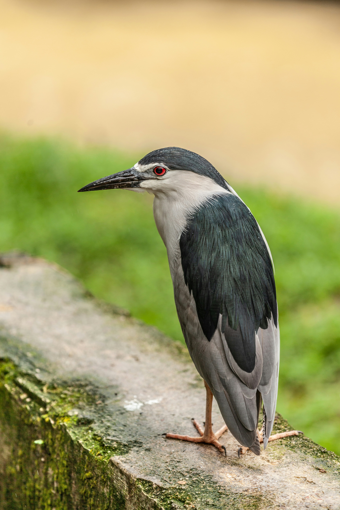

The Black-Crowned Night Heron is a stocky, medium-sized heron with a distinctive black crown and back, pale grey wings, and a white or pale grey body. Unlike many herons, it is most active around dusk and during the night. It often stands patiently at the edge of ponds, lakes, marshes, and wetlands before striking at fish, amphibians, insects, and other small prey. During the day, it commonly rests quietly among dense vegetation or in communal roosts. Its broad range and adaptable nature allow it to occupy a variety of wetland habitats.